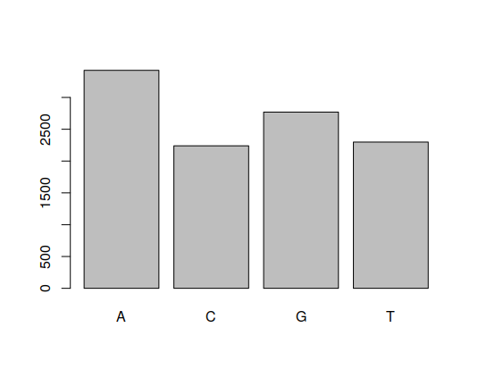
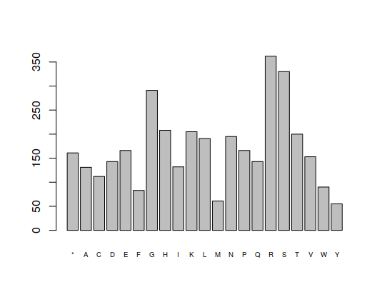

2.3.2 Codon frequencies and finding genes
1 Introduction
Today we will be studying codon frequencies, and automatically find genes in DNA sequences. You can download the sequences by clicking the following links: dengue and zika. Right click it, and choose “Save as…” and choose the Bioinformatics/workspace folder that is in the desktop, as always.
After, copy and paste the following code in the RStudio console, which we will use during the class.
library(seqinr)
library(Biostrings)
# Load vector of nucleotides from file
readDNAString <- function(file) {
DNAString(toupper(c2s(read.fasta(file)[[1]])))
}
# Start and end codons
start = "M"
end = "*"
# Translate a sequence of bases into codons
translateAndRegularize <- function(data, index) {
l <- (length(data)- index+1) %/% 3 * 3
reg <- data[index:(l+index-1)]
Biostrings::translate(reg,no.init.codon = TRUE)
}
# Get first element satisfying constraint
firstCompatible <- function(s, es) {
if(length(es) >= 1) {
for (i in 1:length(es)) {
e <- es[i]
if(e > s) {
return(e)
}
}
}
return(NA)
}
# Get possible genes for a sequence
getPossibleGenes <- function(dna) {
starts <- Biostrings::matchPattern(start, dna)@ranges@start
ends <- Biostrings::matchPattern(end, dna)@ranges@start
sequences <- c()
for(i in 1:length(starts)) {
startEnd <- firstCompatible(starts[i], ends)
if(!is.na(startEnd)) {
sequences <- c(sequences,dna[starts[i]:startEnd])
}
}
sequences
}
# Get all possible genes, using the three frames
getAllPossibleGenes <- function(data) {
l1 <- getPossibleGenes(translateAndRegularize(data,1))
l2 <- getPossibleGenes(translateAndRegularize(data,2))
l3 <- getPossibleGenes(translateAndRegularize(data,3))
gs <- c(l1,l2,l3)
len <- sapply(gs,length)
gs[order(len)]
}
# Plot frequencies
frequencies <- function(data) {
barplot(table(strsplit(as.character(data),split="")),cex.names=0.6)
}After that, load the dengue and zika sequences:
dengue <- readDNAString("dengue.fasta")
zika <- readDNAString("zika.fasta")2 Codon frequencies
Previously, we studied base sequences:
frequencies(dengue)
The same can be done for codons. However, there are three possible positions for codons, so we need to graph these thee:
> frequencies(translateAndRegularize(dengue,1))
> frequencies(translateAndRegularize(dengue,2))
> frequencies(translateAndRegularize(dengue,3))The first one looks like this:

2.1 Questions
- Look at the graphs for positions 1, 2 and 3. Do they look the same?
- Do the same four graphs (one bases and three for codons) for the zika virus.
3 Gene finding
In the previous classes we learned about the simple method for looking for genes in a sequence. This method is implemented in the getAllPossibleGenes function. For example:
> getAllPossibleGenes(DNAString("ATGTAG"))
[[1]]
2-letter AAString object
seq: M*The advantage of this function is that we can do that for larger sequences:
> dengueGenes <- getAllPossibleGenes(dengue)
> dengueGenesEach identified sequence has a different size, and as discussed during the letter, this is one of the main characteristics used to discern between false and true genes. The resulting list is sorted, look at the sizes for each sequence.
One can plot sizes with:
hist(sapply(dengueGenes,length),100,main="ORF Lengths",xlab="Length")
This plot makes it simpler to draw a boundary between sequences that are two small and those who have a sufficient size.
3.1 Questions
- How many sequences have a size bigger than 100? Show
dengueGenesand take a look at array indices. - Repeat this analysis for the zika virus.